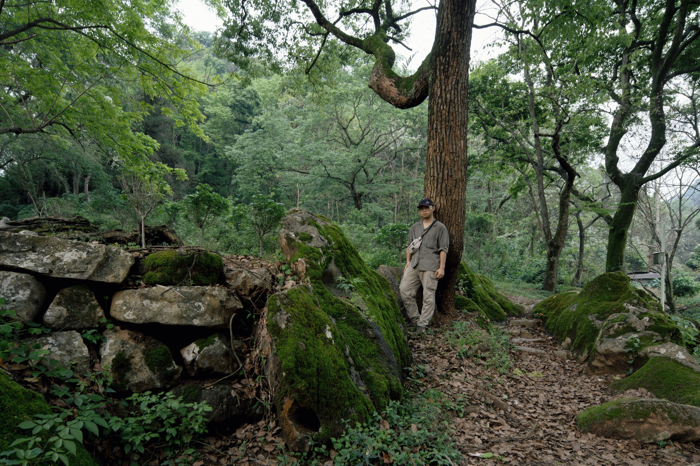
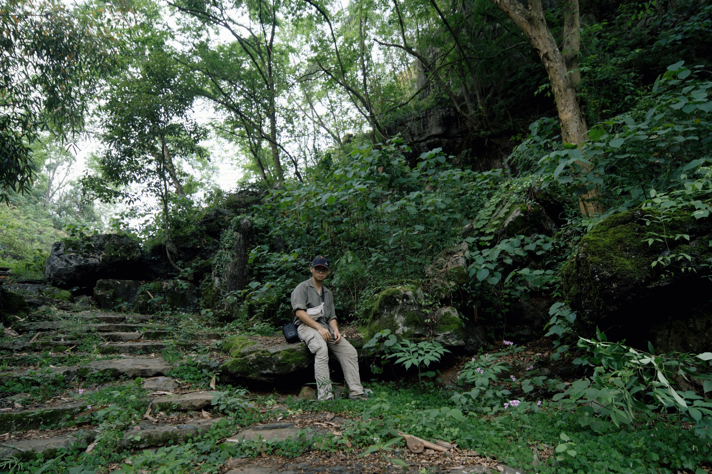
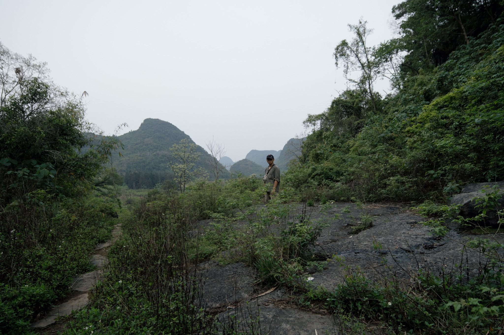
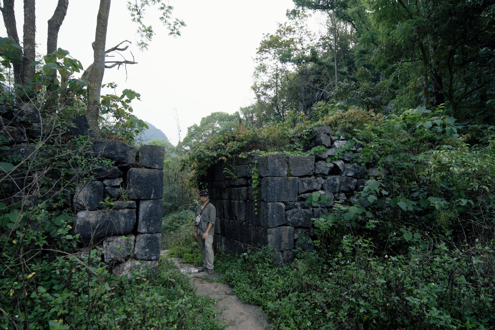
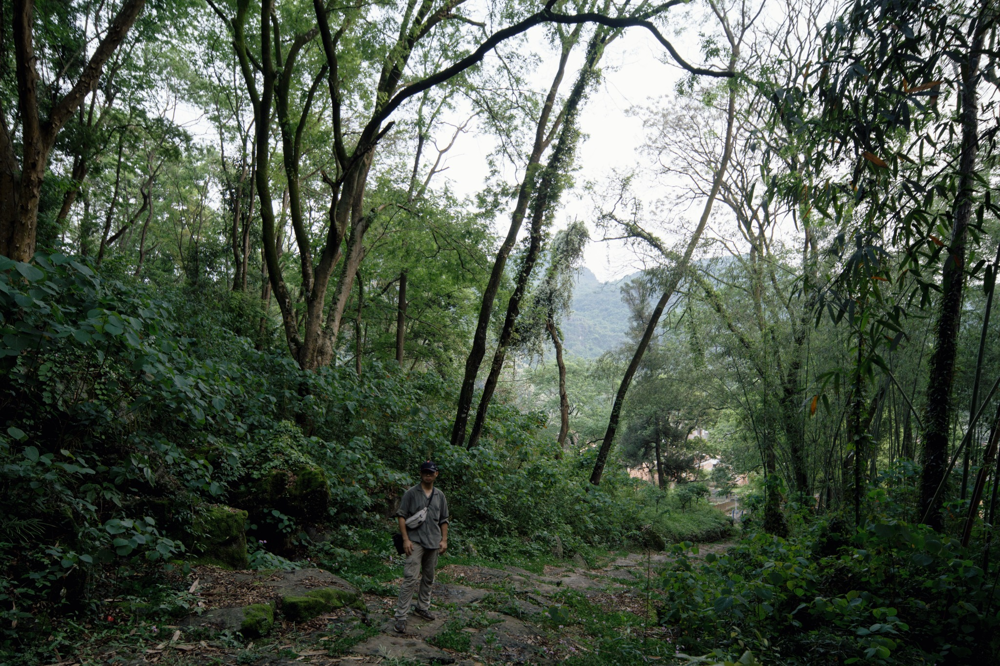
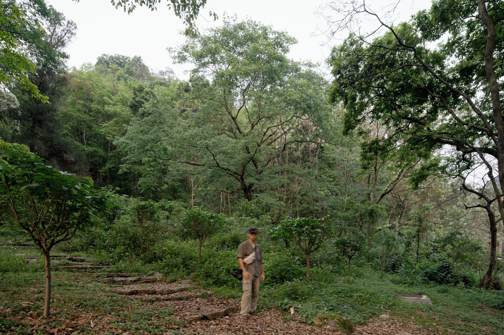
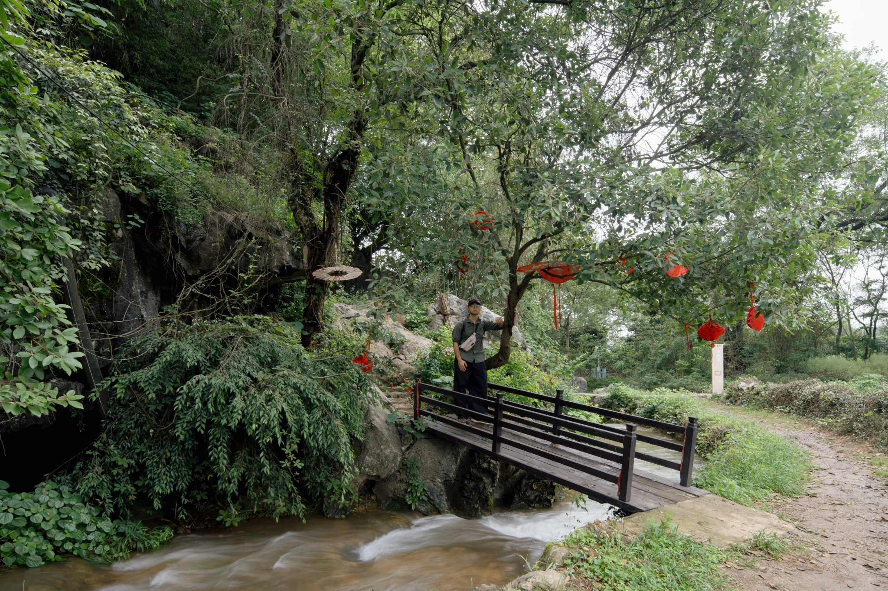
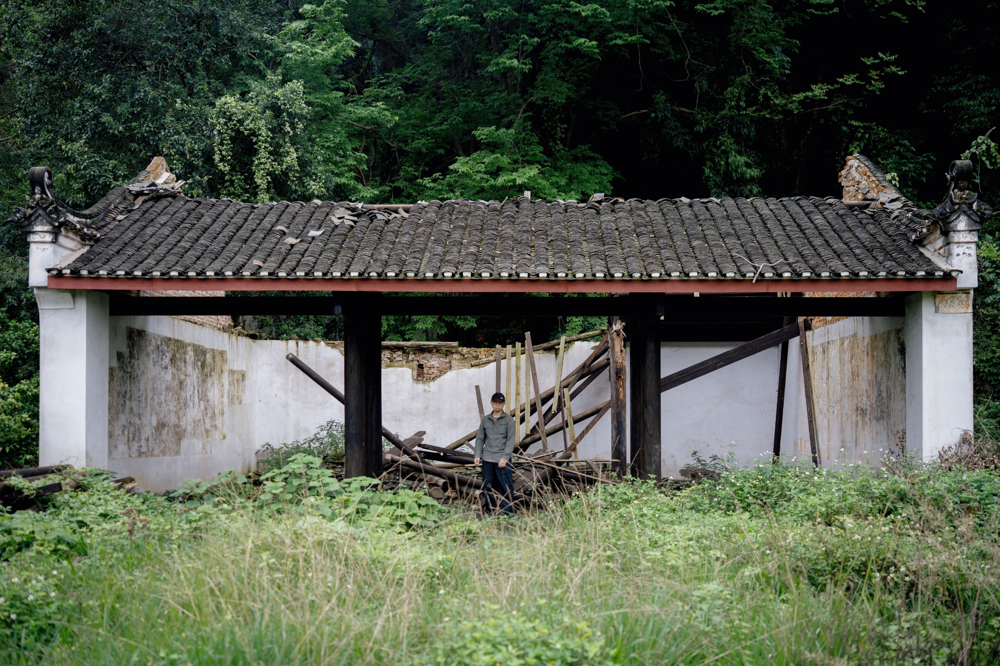
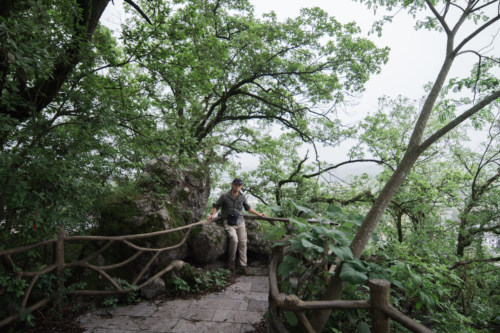

01
守望者
古树成为画面中心，人物靠在树旁，像是进入森林之前短暂地停顿。

ScrollProject Statement
这些照片里的主体并不总是人物。更多时候，真正占据画面的是树、石、路、山体和废弃建筑。 人物只作为尺度出现：他让观众意识到空间有多大、森林有多深、遗迹有多安静。
因此这个网页被设计成一本可以滚动阅读的影像集。每一张照片独立成章，配合极少的文字，保留现场的潮湿、阴影、苔藓和缓慢感。
古树成为画面中心，人物靠在树旁，像是进入森林之前短暂地停顿。

石阶、阴影和植物形成隐蔽的门槛，像一处被时间遮住的入口。

视野从密林打开到山体，人物在画面中央但几乎被环境稀释。

石墙像一段残缺的句子，保留了过去存在过的秩序。

人物站在路的转折处，森林不断向内延伸，像一个没有明确尽头的空间。

人像被森林暂时接纳，停留在光线、树影和石阶之间。

水、桥和红色装饰打破了整组照片的绿色沉默，像一次短暂的仪式。

废弃建筑让作品从自然转向历史，空间里似乎仍残留人的痕迹。

路径抵达一处可以回望的地方。终点并不明确，但观看已经完成。
Index
点击任意照片可以放大查看。
Contact
你可以把这里改成自己的真实简介、学校、专业、社交媒体或更多项目链接。
hrx791135757@gmail.com